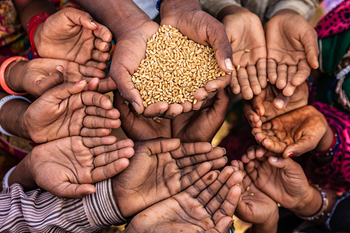

Poverty refers to a situation in which a person remain underprivileged from the basic necessities of life. In addition, the person does not have an inadequate supply of food, shelter, and clothes. In India, most of the people who are suffering from poverty cannot afford to pay for a single meal a day. Also, they sleep on the roadside; wear dirty old clothes. In addition, they do not get proper healthy and nutritious food, neither medicine nor any other necessary thing.
The rate of poverty in India is increasing because of the increase in the urban population. The rural people are migrating to cities to find better employment. Most of these people find an underpaid job or an activity that pays only for their food. Most importantly, around crores of urban people are below the poverty line and many of the people are on the borderline of poverty. Besides, a huge number of people live in low-lying areas or slums. These people are mostly illiterate and in spite of efforts their condition remains the same and there is no satisfactory result. Furthermore, there are many reasons that we can say are the major cause of poverty in India. These causes include corruption, growing population, poor agriculture, the wide gap of rich and poor, old customs, illiteracy, unemployment and few more. A large section of people are engaged in an agricultural activity but the activity pays very less in comparison to the work done by employees. Also, more population needs more food, houses and money and in the lack of these facilities the poverty grows very quickly. In addition, being extra poor and extra rich also widens the gap between the rich and poor. Moreover, the rich are growing richer and the poor are getting poorer creating an economic gap that is difficult to fill up. It affects people living in a lot of ways. Also, it has various effects that include illiteracy, reduced nutrition and diet, poor housing, child labor, unemployment, poor hygiene and lifestyle, and feminization of poverty, etc. Besides, this poor people cannot afford a healthy and balanced diet, nice clothes, proper education, a stable and clean house, etc. because all these facilities require money and they don’t even have money to feed two meals a day then how can they afford to pay for these facilities. For solving the problem of poverty it is necessary for us to act quickly and correctly. Some of the ways of solving these problems are to provide proper facilities to farmers. So, that they can make agriculture profitable and do not migrate to cities in search of employment. Also, illiterate people should be given the required training so that they can live a better life. To check the rising population, family planning should be followed. Besides, measures should be taken to end corruption, so that we can deal with the gap between rich and poor. In conclusion, poverty is not the problem of a person but of the whole nation. Also, it should be deal with on an urgent basis by the implementation of effective measures. In addition, eradication of poverty has become necessary for the sustainable and inclusive growth of people, society, country, and economy. source - Toppr